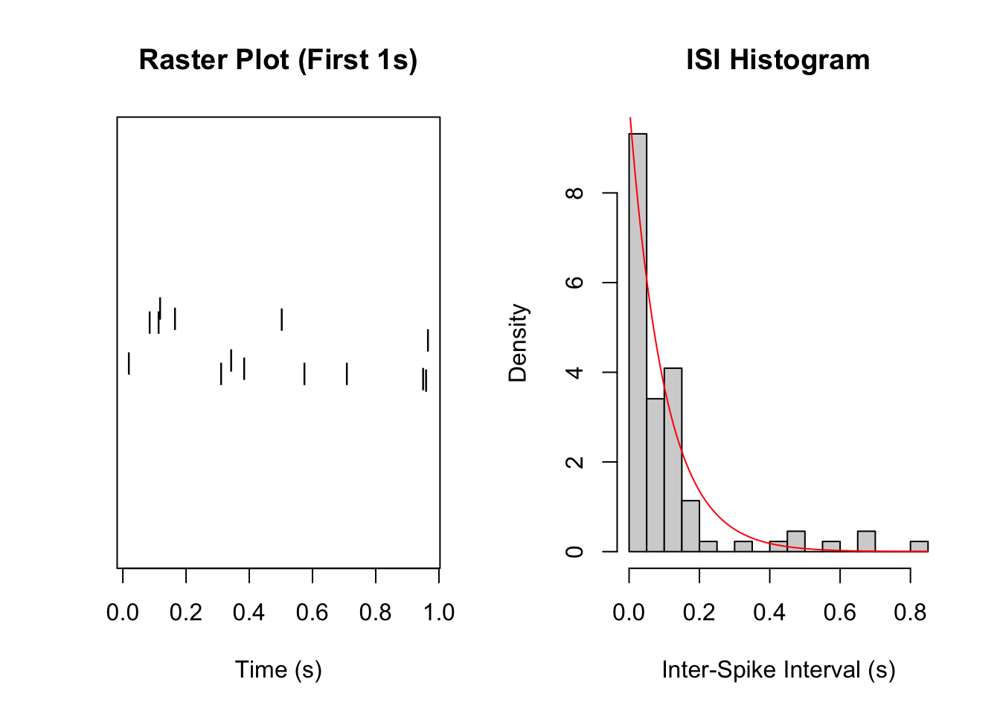
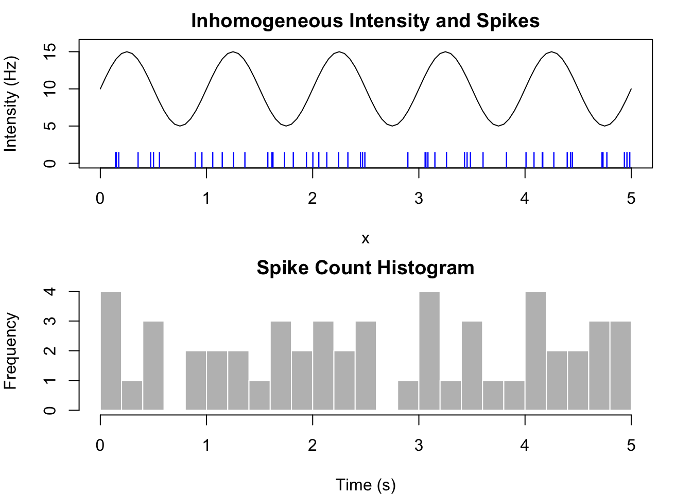
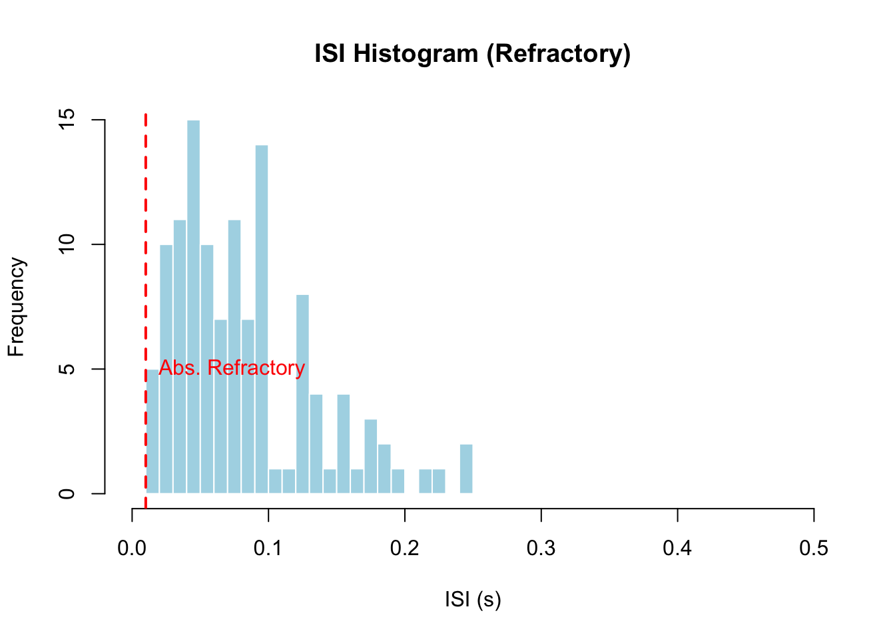
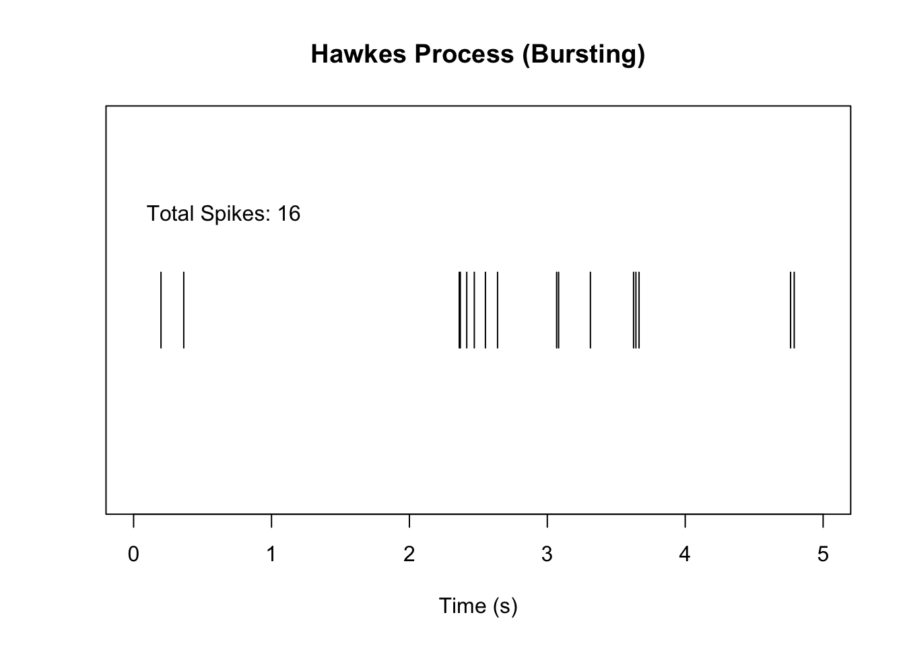
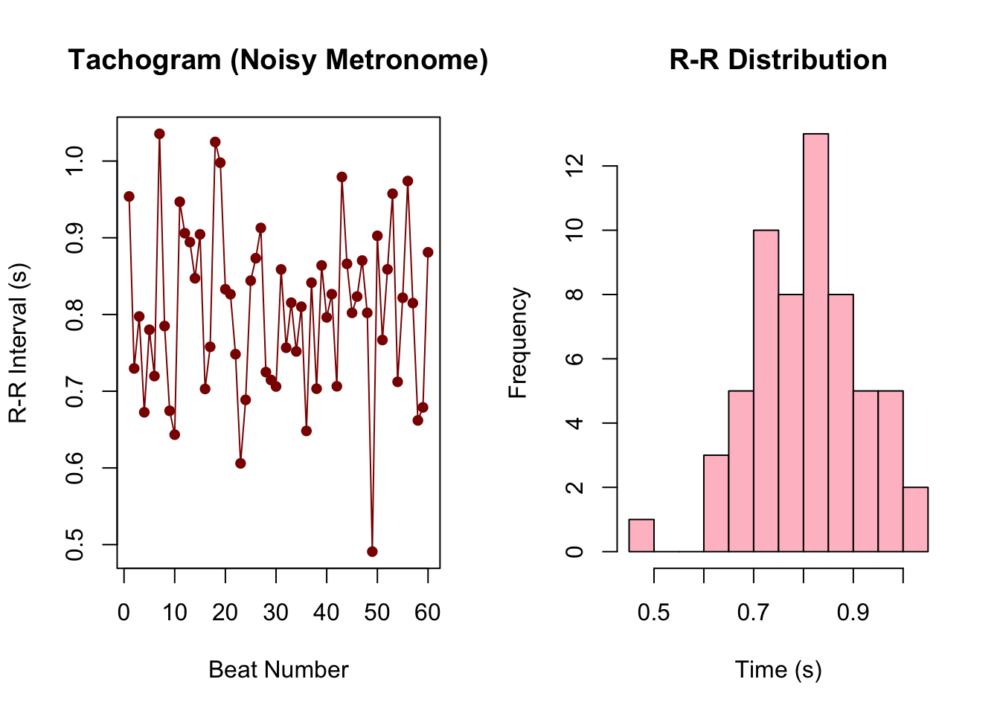
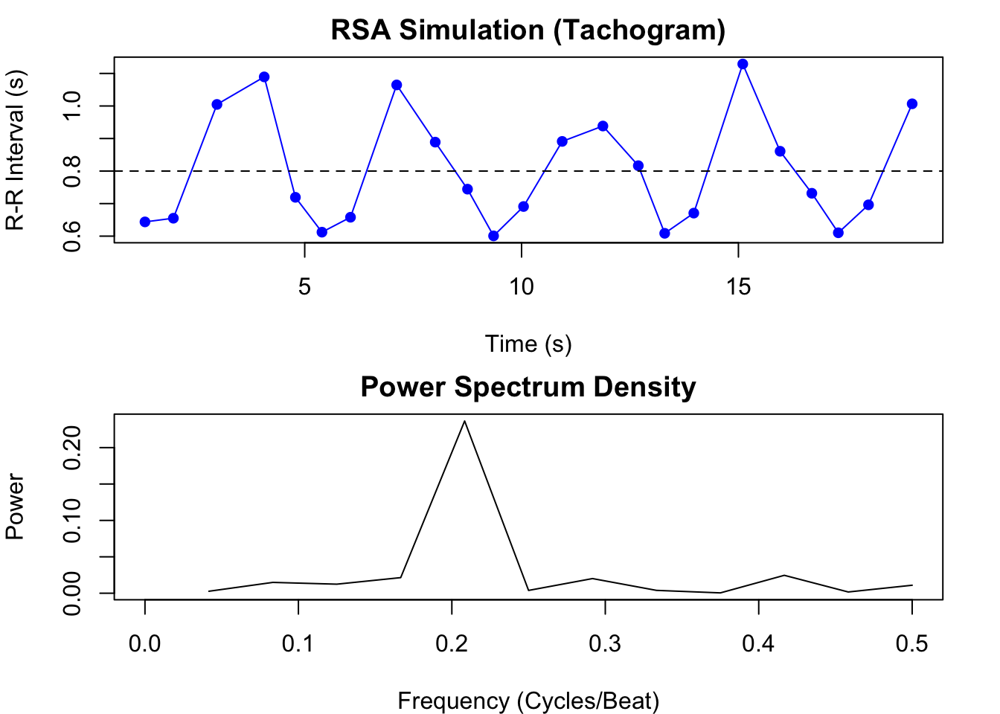
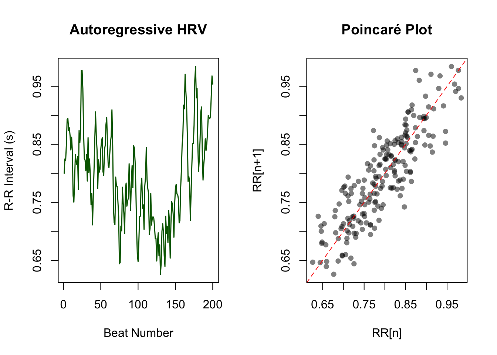

Simulating Point Processes via Conditional Intensity
A point process is a stochastic collection of events occurring in continuous time. In physiology, the most common realization of a point process is a neural spike train—a sequence of action potentials generated by a neuron. Other examples include heartbeats (R-peaks in ECG), vesicle release events at a synapse, or spontaneous muscle twitches.
Researchers often model these events using the conditional intensity function (CIF), denoted as \(\lambda(t | H_t)\). This function represents the instantaneous probability rate of an event occurring at time \(t\), given the entire history of events \(H_t\) up to that moment.
For a physiologist, \(\lambda(t | H_t)\) answers the question: Given the stimulus applied right now, and given how recently the neuron fired previously, how likely is it to fire in the next millisecond?
This guide details the algorithms required to simulate these processes in R. It progresses from memoryless constant-rate processes to complex, history-dependent systems that mimic bursting and refractory periods.
Mathematical Foundations
The conditional intensity function is defined as:
\[
\lambda(t | H_t) = \lim_{\Delta t \to 0} \frac{P(\text{event in } (t, t+\Delta t] | H_t)}{\Delta t}
\]
If \(\lambda(t | H_t)\) is constant, the process is a Homogeneous Poisson Process. If \(\lambda(t | H_t)\) depends on time \(t\) but not history \(H_t\), it is an Inhomogeneous Poisson Process. If it depends on \(H_t\), it is a general point process (e.g., a renewal process or Hawkes process).
1. The Homogeneous Poisson Process
Scenario: A neuron firing due to random thermal noise with no external stimulus and no refractory period.
This is the simplest baseline. The rate \(\lambda\) is constant. A defining property of the homogeneous Poisson process is that the time intervals between events (Inter-Spike Intervals, or ISIs) follow an Exponential distribution.
To simulate this, we do not need complex loops. We generate the intervals directly and take their cumulative sum to find the event times.
R Implementation
#' Simulate Homogeneous Poisson Process#' #' @param rate The constant firing rate (Hz)#' @param duration Total time to simulate (seconds)#' @return Vector of event timessim_homogeneous <-function(rate, duration) {# 1. Estimate expected number of events to allocate memory# We add a margin (e.g., 20%) to ensure we cover the duration n_guess <-ceiling(rate * duration *1.2)# 2. Generate Inter-Spike Intervals (ISIs) from Exponential distribution# The rate parameter for rexp is lambda isis <-rexp(n_guess, rate = rate)# 3. Convert intervals to absolute times event_times <-cumsum(isis)# 4. Filter events that exceed the duration event_times <- event_times[event_times <= duration]return(event_times)}# Example Usageset.seed(42)lambda_constant <-10# 10 HzT_max <-10# 10 secondsspikes_homo <-sim_homogeneous(lambda_constant, T_max)# Visualizationpar(mfrow =c(1, 2))# Raster plot (first 1 second)stripchart(spikes_homo[spikes_homo <1], method ="jitter", pch ="|", main ="Raster Plot (First 1s)", xlab ="Time (s)")# Histogram of ISIshist(diff(spikes_homo), breaks =30, main ="ISI Histogram", xlab ="Inter-Spike Interval (s)", freq =FALSE)curve(dexp(x, rate = lambda_constant), add =TRUE, col ="red")

The histogram of ISIs aligns with the theoretical exponential density curve (red line), confirming the memoryless nature of the process.
2. The Inhomogeneous Poisson Process
Scenario: A retinal neuron responding to a visual stimulus that changes brightness over time. The firing rate changes, but the neuron still has no “memory” (no refractory period).
Here, \(\lambda(t)\) varies with time. We can no longer simply draw from an exponential distribution because the rate parameter changes continuously.
Algorithm: Ogata’s Thinning (Rejection Sampling)
The standard method for simulating this is Ogata’s Thinning Algorithm (a variation of Lewis and Shedler’s method). The logic follows a “generate and reject” principle:
Determine an upper bound \(\lambda_{max}\) such that \(\lambda(t) \le \lambda_{max}\) for all \(t\).
Generate a candidate event time using the constant rate \(\lambda_{max}\) (a homogeneous process).
Accept the candidate at time \(t_i\) with probability \(P = \lambda(t_i) / \lambda_{max}\).
If rejected, discard the event and generate the next candidate from the current time.
This essentially generates a dense cloud of points (at the high rate) and thins them out where the actual intensity \(\lambda(t)\) is low.
R Implementation
#' Simulate Inhomogeneous Poisson Process via Thinning#'#' @param intensity_fn A function that takes time 't' and returns lambda(t)#' @param max_rate A constant upper bound for intensity_fn over the duration#' @param duration Total simulation time#' @return Vector of event timessim_inhomogeneous_thinning <-function(intensity_fn, max_rate, duration) { event_times <-numeric(0) current_time <-0while(current_time < duration) {# 1. Generate time to next candidate event (Homogeneous step)# Using rate = max_rate dt <-rexp(1, rate = max_rate) current_time <- current_time + dtif (current_time > duration) break# 2. Rejection Step# Calculate actual intensity at this candidate time lambda_actual <-intensity_fn(current_time)# Calculate acceptance probability prob_accept <- lambda_actual / max_rate# Check bounds (rigor check)if (prob_accept >1) {stop("Error: max_rate provided is lower than actual intensity.") }# 3. Accept or Reject# runif(1) generates a random number between 0 and 1if (runif(1) < prob_accept) { event_times <-c(event_times, current_time) } }return(event_times)}# Define a time-varying intensity function (e.g., Sine wave stimulus)# Baseline 10Hz, Modulation +/- 5Hz, Frequency 1Hzsine_intensity <-function(t) {10+5*sin(2* pi * t)}# The maximum rate is 10 + 5 = 15 Hzlambda_max <-15T_max <-5set.seed(123)spikes_inhomo <-sim_inhomogeneous_thinning(sine_intensity, lambda_max, T_max)# Visualizationpar(mfrow =c(2, 1), mar =c(4, 4, 2, 2))# Plot Intensity Functioncurve(sine_intensity(x), from =0, to = T_max, ylab ="Intensity (Hz)", main ="Inhomogeneous Intensity and Spikes", ylim =c(0, 16))# Overlay spikespoints(spikes_inhomo, rep(0.5, length(spikes_inhomo)), pch ="|", col ="blue")# Check spike density vs timehist(spikes_inhomo, breaks =20, main ="Spike Count Histogram", xlab ="Time (s)", border ="white", col ="grey")

The spike density in the histogram tracks the sine wave of the intensity function.
3. History Dependence: The Refractory Period
Scenario: A real neuron cannot fire twice in immediate succession.
After a spike, sodium channels are inactivated (absolute refractory period), followed by a recovery period (relative refractory period).
The intensity is now conditional on history: \(\lambda(t | H_t)\). specifically, it depends on the time elapsed since the last spike, denoted as \(t - t_{last}\).
Where \(\lambda_0\) is a baseline rate and \(R(\tau)\) is a recovery function that goes from 0 to 1.
Algorithm: Modified Thinning
We can still use Ogata’s thinning, but we must update the intensity calculation at every step to look at the most recent accepted spike. Since the recovery function usually lowers the rate, the baseline \(\lambda_0\) serves as a valid global upper bound \(\lambda_{max}\).
R Implementation
#' Simulate Process with Refractory Period#'#' @param baseline_rate The firing rate when fully recovered#' @param abs_refractory Absolute refractory period duration (seconds)#' @param tau_recovery Time constant for relative refractory recovery#' @param duration Total simulation timesim_refractory <-function(baseline_rate, abs_refractory, tau_recovery, duration) { event_times <-numeric(0) current_time <-0 last_spike_time <--Inf# Assume long time since last spike at start# Upper bound is the baseline rate (recovery function <= 1) max_rate <- baseline_ratewhile(current_time < duration) {# Generate candidate dt <-rexp(1, rate = max_rate) current_time <- current_time + dtif (current_time > duration) break# Calculate recovery factor R(t - t_last) time_since_last <- current_time - last_spike_timeif (time_since_last <= abs_refractory) { recovery_factor <-0# Absolute refractory } else {# Exponential recovery 1 - exp(-(t - t_abs)/tau) rel_time <- time_since_last - abs_refractory recovery_factor <-1-exp(-rel_time / tau_recovery) } lambda_actual <- baseline_rate * recovery_factor# Accept/Rejectif (runif(1) < (lambda_actual / max_rate)) { event_times <-c(event_times, current_time) last_spike_time <- current_time # Update history } }return(event_times)}# Parametersbase_rate <-20# Hzt_abs <-0.010# 10ms absolute refractorytau <-0.020# 20ms recovery time constantT_sim <-10set.seed(999)spikes_ref <-sim_refractory(base_rate, t_abs, tau, T_sim)# Visualization# ISI Histogram is key here. It should show 0 counts near 0.hist(diff(spikes_ref), breaks =seq(0, 0.5, by=0.01), main ="ISI Histogram (Refractory)", xlab ="ISI (s)", col ="lightblue", border ="white")abline(v = t_abs, col ="red", lty =2, lwd =2)text(t_abs, 5, "Abs. Refractory", pos =4, col ="red")

The histogram shows a “hole” at small intervals (0 to 10ms), characterizing the refractory period. A standard Poisson process would have its highest density at zero.
4. Self-Exciting Processes (Hawkes Process)
Scenario: “Bursting” behavior.
When a neuron fires (or a vesicle is released), it temporarily increases the probability of another event occurring immediately after. This mimics network excitation or calcium influx.
The intensity is defined as a baseline plus a summation of kernels over all past events:
Algorithm: Ogata’s Modified Thinning with Variable Bound
This is more complex because every time an event occurs, the intensity jumps up. The constant upper bound strategy becomes inefficient or impossible if the self-excitation is strong.
We use a dynamic upper bound. Between events, the intensity is strictly decaying (since the exponential kernels decay). Therefore, immediately after an event at \(t_i\), the intensity is at a local maximum. We can use the current intensity value as the bound for the next interval, or update the bound adaptively.
Here, we define a function get_hawkes_intensity that sums the contributions of all previous spikes.
R Implementation
#' Simulate Hawkes Process (Self-Exciting)#'#' @param mu Baseline rate#' @param alpha Excitation magnitude#' @param beta Decay rate#' @param duration Simulation timesim_hawkes <-function(mu, alpha, beta, duration) { event_times <-numeric(0) current_time <-0# We need a dynamic upper bound.# At t=0, max lambda is just mu. current_max_lambda <- mu while(current_time < duration) {# 1. Generate candidate based on current conservative upper bound# Note: If the process is very bursty, lambda can get high.# We construct the upper bound at the CURRENT time.# Since the Hawkes kernel decays, the intensity at current_time# is the highest it will be until the next event.# Calculate intensity at exactly current_timeif (length(event_times) ==0) { lambda_now <- mu } else {# Sum of alpha * exp(-beta * (t - t_i)) decay_factors <-exp(-beta * (current_time - event_times)) lambda_now <- mu +sum(alpha * decay_factors) }# Use lambda_now as the bounding lambda for the next step# because the function is monotonically decreasing between spikes. lambda_bound <- lambda_now# Generate candidate step dt <-rexp(1, rate = lambda_bound) candidate_time <- current_time + dtif (candidate_time > duration) break# 2. Rejection Test# Calculate actual intensity at candidate_timeif (length(event_times) ==0) { lambda_candidate <- mu } else { decay_factors <-exp(-beta * (candidate_time - event_times)) lambda_candidate <- mu +sum(alpha * decay_factors) } prob_accept <- lambda_candidate / lambda_boundif (runif(1) < prob_accept) { event_times <-c(event_times, candidate_time)# Do not update current_time here; the loop continues from candidate_time }# Advance time regardless of acceptance current_time <- candidate_time }return(event_times)}# Parameters: rare background events, but strong burstingmu_bg <-2# 2 Hz spontaneousalpha_ex <-10# Jump by 10 Hz after a spikebeta_dec <-20# Decay back quickly (within ~100ms)T_sim <-5set.seed(2026)spikes_hawkes <-sim_hawkes(mu_bg, alpha_ex, beta_dec, T_sim)# Visualizationpar(mfrow =c(1, 1))plot(spikes_hawkes, rep(1, length(spikes_hawkes)), type ="n", ylim =c(0, 2), xlim =c(0, T_sim), xlab ="Time (s)", yaxt ="n", ylab ="")segments(spikes_hawkes, 0.8, spikes_hawkes, 1.2, lwd =1)title("Hawkes Process (Bursting)")text(0, 1.5, paste("Total Spikes:", length(spikes_hawkes)), pos=4)

In the resulting plot, you will observe distinct clusters of events. A spontaneous background event occurs, triggering a rapid succession of subsequent events that eventually die out as the decay (\(\beta\)) overcomes the excitation (\(\alpha\)).
5. The General Inversion Method (Time-Rescaling)
Rejection sampling (thinning) is intuitive but can be computationally slow if \(\lambda_{max}\) is much larger than the average \(\lambda(t)\) (high rejection rate). The Time-Rescaling Theorem offers a direct generation method.
Theory: For any point process with conditional intensity \(\lambda(t | H_t)\), if we transform the time axis using the integrated intensity:
\[
\Lambda(t) = \int_0^t \lambda(u | H_u) du
\]
The transformed event times \(\tau_i = \Lambda(t_i)\) form a Homogeneous Poisson Process with rate 1.
Simulation Algorithm:
Generate unit-rate exponential intervals \(E_1, E_2, \dots\) (which sum to \(\tau_1, \tau_2, \dots\)).
Find the actual time \(t_i\) such that \(\int_{t_{i-1}}^{t_i} \lambda(u) du = E_i\).
This requires inverting the integral of the intensity function. For simple functions, this is analytical. For complex functions, we solve it numerically.
Below is an implementation for a time-dependent sine wave (same as Section 2) using numerical root finding instead of thinning.
R Implementation
#' Simulate via Time-Rescaling (Inversion) - Corrected#'#' @param integrated_intensity_fn Function Lambda(t) (The definite integral of lambda from 0 to t)#' @param duration Total time to simulate (seconds)#' @return Vector of event timessim_inversion <-function(integrated_intensity_fn, duration) { t_last <-0 event_times <-numeric(0)while(TRUE) {# 1. Generate the "target area" (integral step) required to trigger next event# For a Poisson process, these steps are Exponential(1) target_integral <-rexp(1, rate =1)# 2. Calculate current accumulated intensity Lambda_current <-integrated_intensity_fn(t_last)# 3. Determine target accumulated intensity Lambda_target <- Lambda_current + target_integral# 4. Safety check: Is the target reachable within the simulation duration?# If the total area under the curve up to 'duration' is less than target, stop.if (integrated_intensity_fn(duration) < Lambda_target) {break }# 5. Solve for t such that Lambda(t) = Lambda_target f_root <-function(t) { integrated_intensity_fn(t) - Lambda_target }# Use uniroot to find the time. extendInt="upX" allows searching # beyond the initial guess if the rate is unexpectedly low. solution <-uniroot(f_root, lower = t_last, upper = duration *2, extendInt ="upX") t_next <- solution$rootif (t_next > duration) break event_times <-c(event_times, t_next) t_last <- t_next }return(event_times)}# --- Example Usage ---# Define Integral of Sine Intensity: 10 + 5sin(2*pi*t)# Integral = 10t - (5/2pi)cos(2*pi*t) + C# We define C such that Lambda(0) = 0.Lambda_sine <-function(t) {10* t - (5/ (2* pi)) *cos(2* pi * t) + (5/ (2* pi))}set.seed(123)spikes_inv <-sim_inversion(Lambda_sine, duration =5)# Verificationcat("Number of events simulated:", length(spikes_inv), "\n")
Number of events simulated: 45
The inversion method is precise and generates no rejected points, making it highly efficient for smooth, integrable intensity functions.
Summary of Methods
Method
Complexity
Best For
Physiology Use Case
Homogeneous
O(N)
Constant rates
Background noise, spontaneous firing
Thinning
O(N / acceptance_ratio)
Complex/Non-integrable functions
Arbitrary stimulus waveforms
Modified Thinning
High
History dependence
Refractory periods, bursting, network models
Time-Rescaling
O(N * root_finding)
Integrable functions
Smoothly varying stimuli, oscillating inputs
Code Structure for Researchers
When building simulations for publication or analysis:
Vectorize where possible: The homogeneous simulation contains no loops. It is orders of magnitude faster than iterative approaches.
Modularize Intensity: Define your physiological model (refractory, bursting, stimulus) as a separate S3 object or function, then pass it to a generic simulation engine (like the thinning algorithm).
Validate: Always plot the ISI histogram and the autocorrelogram of your simulated data. If you simulate a refractory period, the autocorrelogram must be zero at lag zero.
This guide provides the algorithmic primitives. You can combine them—for example, a Hawkes process with a time-varying baseline \(\mu(t)\)—simply by updating the intensity function \(\lambda(t)\) inside the thinning loop.
Simulating Heart Rate Variability (R-R Intervals)
Physiologists often find standard Poisson processes inadequate for modeling heartbeats. A healthy heart is not a random Geiger counter; it is a rhythmic oscillator modulated by the autonomic nervous system.
If we model a heart as a Poisson process, the intervals between beats (Inter-Beat Intervals or IBIs) would follow an exponential distribution, implying that the most likely time for the next beat is immediately after the previous one. This is physiologically impossible due to the refractory period and the rhythmic nature of the SA node.
Below is a progression of models for R-R intervals, moving from a simple metronome to a history-dependent process suitable for Heart Rate Variability (HRV) analysis.
Level 1: The Renewal Model (The Noisy Metronome)
Concept: The heart fires at a regular interval (e.g., every 0.8s) with some random jitter. The intervals are independent of each other. Math: Instead of an Exponential distribution, we draw intervals from a Gamma or Inverse Gaussian distribution, which are “bell-shaped” but defined only for positive numbers.
#' Simulate Heartbeats as a Renewal Process#' #' @param n_beats Number of beats to simulate#' @param mean_rr Mean R-R interval (seconds)#' @param shape Shape parameter (higher = more rhythmic/less variable)sim_heart_renewal <-function(n_beats, mean_rr, shape) {# We use Gamma distribution: Mean = shape / rate# Therefore: rate = shape / Mean rate_param <- shape / mean_rr# Generate R-R intervals rr_intervals <-rgamma(n_beats, shape = shape, rate = rate_param)# Convert to absolute event times beat_times <-cumsum(rr_intervals)return(list(times = beat_times, rr = rr_intervals))}set.seed(42)# Simulate 60 beats, Mean RR = 0.8s (75 BPM), Shape = 50 (Very regular)heart_data <-sim_heart_renewal(n_beats =60, mean_rr =0.8, shape =50)# Visualizationpar(mfrow =c(1, 2))# 1. Tachogram: The standard way to view HRVplot(heart_data$rr, type ="o", pch =16, col ="darkred",main ="Tachogram (Noisy Metronome)", ylab ="R-R Interval (s)", xlab ="Beat Number")# 2. Histogramhist(heart_data$rr, breaks =15, col ="pink", main ="R-R Distribution", xlab ="Time (s)")

Physiological Note: While the distribution looks correct (Gaussian-like), the Tachogram reveals the flaw: the variation is “white noise.” Real heart rates drift slowly up and down; they don’t jump randomly beat-to-beat.
Level 2: Respiratory Sinus Arrhythmia (RSA)
Concept: Breathing modulates the heart rate. During inhalation, the vagus nerve is inhibited, and heart rate speeds up (R-R shortens). During exhalation, it slows down. Math: This is a Modulated Renewal Process. We cannot just add a sine wave to the times. We must modulate the rate at which the “internal clock” of the heart ticks.
We use the Time-Rescaling approach again, but reversed. We generate “internal” regular ticks (Gamma distributed), and then map them to real time using the integral of the breathing signal.
#' Simulate RSA via Modulated Renewal Process#'#' @param duration Total time (seconds)#' @param mean_rr Baseline R-R interval#' @param breath_freq Breathing frequency (Hz)#' @param rsa_strength Strength of modulation (0 to 1)sim_heart_rsa <-function(duration, mean_rr, breath_freq, rsa_strength) {# 1. Define the Rate Modulation Function lambda(t)# Baseline rate is 1/mean_rr. Modulation oscillates around it. baseline_rate <-1/ mean_rr lambda_fn <-function(t) { baseline_rate * (1+ rsa_strength *sin(2* pi * breath_freq * t)) }# 2. Define the Integral Lambda(t)# Integral of (1 + A*sin(w*t)) is t - (A/w)cos(w*t) Lambda_fn <-function(t) { omega <-2* pi * breath_freq term1 <- baseline_rate * t term2 <- (baseline_rate * rsa_strength / omega) * (1-cos(omega * t))return(term1 + term2) }# 3. Generate "Internal" Ticks (The underlying rhythm)# We estimate how many beats fit in the duration (+ buffer) n_guess <-ceiling(duration / mean_rr *1.5)# Using Gamma to represent the regularity of the SA node# Shape 100 implies a very tight rhythm, which is then stretched/squashed by RSA internal_intervals <-rgamma(n_guess, shape =100, rate =100) internal_times <-cumsum(internal_intervals)# 4. Invert Lambda(t) to find Real Times# We find t such that Lambda(t) = internal_time real_times <-numeric(length(internal_times))for(i inseq_along(internal_times)) { target <- internal_times[i]# Check if target exceeds max capacity of durationif(Lambda_fn(duration) < target) { real_times <- real_times[1:(i-1)]break }# Root finding f_root <-function(t) { Lambda_fn(t) - target } sol <-uniroot(f_root, lower =0, upper = duration *2, extendInt ="upX") real_times[i] <- sol$root }return(real_times)}set.seed(101)beats_rsa <-sim_heart_rsa(duration =20, mean_rr =0.8, breath_freq =0.25, rsa_strength =0.3)rr_rsa <-diff(beats_rsa)# Visualizationpar(mfrow =c(2, 1), mar =c(4,4,2,2))plot(beats_rsa[-1], rr_rsa, type ="o", pch =16, col ="blue",main ="RSA Simulation (Tachogram)", ylab ="R-R Interval (s)", xlab ="Time (s)")abline(h =0.8, lty =2)# Verify the spectrum (Physiologists love PSD plots)spec <-spectrum(rr_rsa, plot =FALSE)plot(spec$freq, spec$spec, type ="l", main ="Power Spectrum Density", xlab ="Frequency (Cycles/Beat)", ylab ="Power", xlim =c(0, 0.5))

# We should see a peak around 0.25 Hz (normalized to beat frequency)
The Tachogram now shows a clear oscillation. This mimics the “Vagal Tone” effect.
Level 3: The Barbieri-Brown Model (History Dependent)
Concept: The gold standard in statistical physiology. The probability of the next heartbeat depends explicitly on the previous interval. This creates an autoregressive structure, mimicking the baroreflex feedback loop (blood pressure changes \(\rightarrow\) heart rate correction).
Math: We model the -th R-R interval (\(rr_k\)) directly using a regression equation:
where \(\epsilon\) follows an Inverse Gaussian distribution.
This is technically a discrete point process simulation, which is computationally efficient and widely used for generating synthetic ECGs.
#' Simulate Autoregressive Heart Rate (Barbieri-Brown style)#'#' @param n_beats Total beats#' @param mu Mean R-R interval#' @param alpha Autoregressive coefficient (0 to 1). High = strong memory.#' @param sigma Noise levelsim_heart_ar <-function(n_beats, mu, alpha, sigma) { rr <-numeric(n_beats)# Initialize with the mean rr[1] <- mu for(k in2:n_beats) {# 1. Calculate the conditional mean based on history# This is the "deterministic" part of the physiology past_diff <- rr[k-1] - mu conditional_mean <- mu + alpha * past_diff# 2. Add stochasticity (Inverse Gaussian noise)# We use a Normal approximation here for simplicity and standard R availability,# but strictly it should be InvGauss for positive skewness.# To prevent negative intervals in Normal approx, we add a max() check. noise <-rnorm(1, mean =0, sd = sigma) next_rr <- conditional_mean + noise rr[k] <-max(0.3, next_rr) # Physiologic lower bound (300ms) } beat_times <-cumsum(rr)return(list(times = beat_times, rr = rr))}set.seed(2025)# Alpha = 0.8 implies strong correlation with the previous beat (Low Frequency drift)data_ar <-sim_heart_ar(n_beats =200, mu =0.8, alpha =0.85, sigma =0.04)# Visualizationpar(mfrow =c(1, 2))plot(data_ar$rr, type ="l", col ="darkgreen", lwd =1.5,main ="Autoregressive HRV", ylab ="R-R Interval (s)", xlab ="Beat Number")# Poincaré Plot: The signature visualization for HRV# Plots RR_n vs RR_n+1. A cigar shape indicates healthy autoregression.rr_n <- data_ar$rr[1:(length(data_ar$rr)-1)]rr_n1 <- data_ar$rr[2:length(data_ar$rr)]plot(rr_n, rr_n1, pch =16, col =rgb(0,0,0,0.5),main ="Poincaré Plot", xlab ="RR[n]", ylab ="RR[n+1]")abline(0, 1, col ="red", lty =2)

Interpretation:
Tachogram: Shows “wandering” baselines and low-frequency trends, unlike the white noise of Level 1.
Poincaré Plot: The points form an elongated cloud along the diagonal. A globular/round cloud indicates randomness (fibrillation/noise); a “cigar” shape indicates healthy autonomic control.